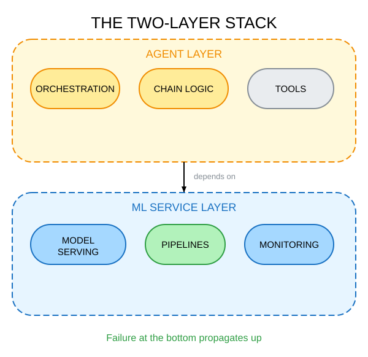
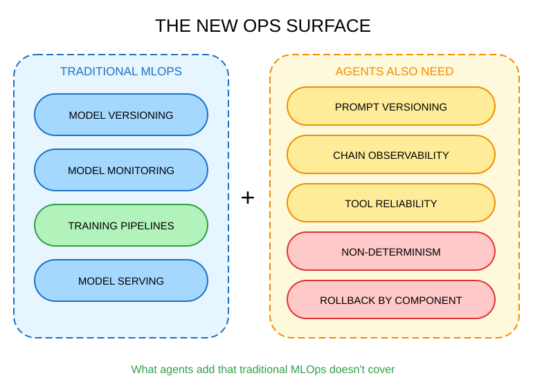
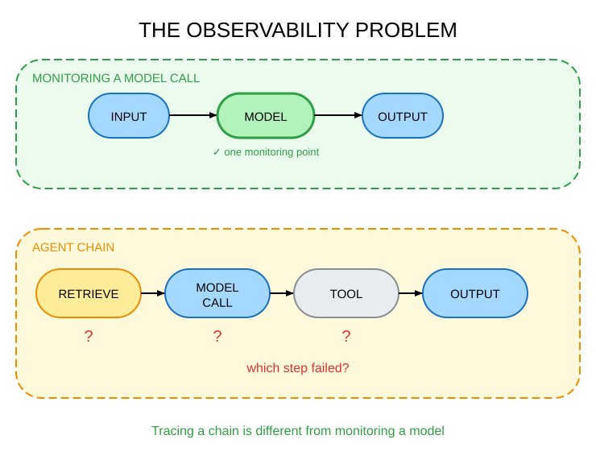

Alessandro Garavaglia | 7 min read | Feb 2026
Agents feel like software. You call an API, chain some functions, wrap it in a container, and deploy. It looks like building a microservice, but the iteration loop is fast and you get feedback quickly. It feels nothing like the slow, careful world of ML model development.
But underneath every agent is an ML service. And if that ML layer is not production-ready, neither is the agent. The operational debt does not disappear when you add an orchestration layer on top.
Most teams are not prepared for this because they are thinking about agents as a software problem, while I think they are an Ops problem. And a harder one than traditional MLOps was, because agents add a new operational surface on top of everything MLOps already required.
Two layers, both need to work
When you build an agent, you are building a consumer of ML services. Every tool call, every model invocation, every retrieval step is a dependency, and each one can fail, degrade, or drift in ways that show up as agent misbehavior.
Traditional MLOps was built to handle batch pipelines and model serving. That is still necessary, but it does not cover the agent layer. The model serving layer needs to be reliable, and the agent orchestration layer needs its own set of disciplines on top.
What happens when the ML layer is not ready?
- The agent calls unreliable services at agent speed;
- Errors propagate through chains;
- One slow model call makes the whole chain time out;
- One drifting model makes the whole agent produce subtly wrong outputs.
The agent looks broken, but the root cause is one level down, and without the right instrumentation, you will not know where to look.
Agents depend on ML models behaving like services.

Agents feel like software engineering. The code is Python, the interfaces are APIs, the deployment is containers. The ML dependency feels invisible until something fails in production, and by then, you are debugging blind.
What agents add to your Ops surface
This is where I want to spend most of the time, because it is what usually gets skipped.

If your team already has MLOps discipline (model versioning, monitoring, CI/CD for training pipelines) that is a good foundation. But agents introduce new operational requirements that MLOps was not designed for.
Prompt versioning. A prompt change is a deployment. It is not a config edit, not a comment in a notebook. When you change a prompt, you change agent behavior, sometimes in subtle ways that only show up in edge cases. You need version control, review, and rollout discipline for prompts the same way you have it for code. You also need a prompt changelog, because when behavior shifts in production, the first question is "what changed?" and the answer is often "someone updated a prompt."
Chain observability. Tracing a single model call is a solved problem in MLOps. Tracing a five-step agent chain is different. When the agent fails, which step broke? Was it the retrieval? The model call? A tool response that came back in an unexpected format? Without distributed tracing across the chain, you are guessing. You are looking at the final output and trying to reverse-engineer where it went wrong.

Tool reliability. Agents call external APIs, search engines, databases, and internal services. Each tool is a new dependency with its own failure modes, latency profiles, and rate limits. If a tool degrades, the agent behavior degrades too, often in non-obvious ways. A search tool that starts returning stale results does not throw an error, it just makes the agent quietly less accurate.
Non-determinism at scale. Same input, different output. This is expected behavior for LLMs. But at scale, it creates a testing problem that does not exist in traditional software. How do you regression-test behavior that is not deterministic? You need evaluation frameworks and behavioral benchmarks, not just unit tests. The bar you are testing against is not "does this return the right value", but instead "does this behave within acceptable bounds."
Rollback complexity. Rolling back a model version is table stakes in MLOps. Rolling back an agent is harder: which component? The model? The prompt? The tool configuration? The chain logic? The more components you have, the harder it is to isolate what broke and what to revert. Teams that do not design for rollback from day one end up taking down the whole agent to fix one component.
Every new capability your agent has is a new operational dependency to manage.
Ops-first for agents in practice
So what does this look like concretely?
ML services need SLAs, not just accuracy metrics. Agents cannot tolerate flaky dependencies. If your model is 98% accurate but down 10% of the time, your agent fails 10% of the time. Latency, uptime, and error rate matter as much as model quality, sometimes more. These need to be measured, tracked, and alerted on.
Monitoring expands beyond the model. Model accuracy alone tells you very little about agent health. You also need chain success rate, step-level latency, tool failure rate, and fallback trigger rate. When something degrades, you want the alert to tell you which layer, not just "the agent is returning bad outputs."
Treat prompts like code. Version them, review them, test them before deploying. A prompt change goes through the same review process as a code change. This sounds bureaucratic until the third time you are in an incident trying to figure out why agent behavior changed last Tuesday.
Contracts between ML services and the agent layer. The interface is a product. Internals can change (model weights, training data, architecture). But the contract cannot change without a migration plan. Agents are clients of ML services. Serve them with the same stability guarantees you would give any other consumer.
Design for rollback from the start. Instrument enough to isolate failures by layer. Know which component to roll back without taking down the whole system. Test rollback procedures before you need them. This is the kind of thing that feels like overhead until 2am on a Sunday.
Ops-first for agents is about knowing what broke when something does.
A personal take
Teams that built MLOps discipline before moving to agents find the new surface area manageable. The habits transfer: you already version models, so versioning prompts is a natural extension. You already monitor model behavior, so adding chain-level monitoring is additive. The new requirements are real, but they are built on a foundation that exists.
Teams that skipped MLOps are in a harder position. They are not just adding agent Ops on top of solid MLOps. They are trying to build both at the same time, under pressure to ship. The debt compounds: unmonitored models calling unmonitored tools, with no version history and no rollback plan.
The temptation in that position is to treat both as "we will figure it out later." But agents amplify the underlying system. If the ML layer has reliability problems, the agent calls it hundreds of times a day and surfaces every one of them.
You do not get to skip MLOps maturity just because agents are newer. You just inherit the debt at a different layer.
Not every team will choose to invest in this. Some will move fast, accumulate operational debt, and deal with the consequences when they come. That is a legitimate choice. But it is worth being clear-eyed about what the consequences are, and when they are likely to arrive.
Closing thoughts
The question is not agents versus ML. They live in the same stack. You cannot optimize one layer in isolation from the other.
The more useful question is: is your team operating like an engineering team or a research team? Research teams explore, prototype, and move on. Engineering teams own what they build, which means owning its reliability. Agents are fast to prototype and slow to own if you have not built the habits.
Agent capabilities will keep growing. More tools, more steps, more complexity, more external dependencies. The operational surface area will grow with it. The teams investing in Ops discipline are building the foundation for everything that comes next.
This post is not meant to provide definitive answers or prescriptive guidance. Its goal is to spark reflections and discussions on the topic.
The views expressed are my own.
Tags: Agentic AI, MLOps, AI Agents, Machine Learning, AI Engineering